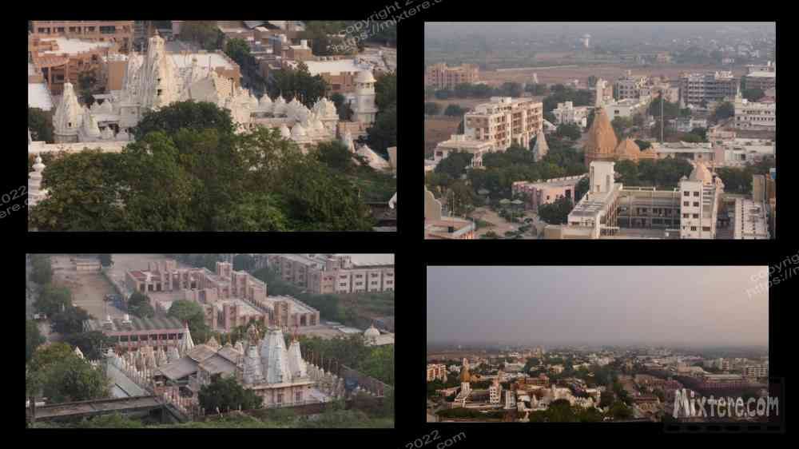

In seeking out Palitana I was, as usual, trying to avoid the typical tourist track. Reading about the 3000-plus steps to thousands of Jain temples sprinkled in the hills above Palitana sounded too good to pass up. The ride from Ahmedabad turned out to be one of only a handful overnight busses that I took in India. Allow me to attempt to describe these busses in greater detail. It has the shell of a Greyhound bus, but inside it is converted into individual sections with “beds” and sliding panels for privacy. I found myself feeling quite stuffy and claustrophobic in my little cubby. I am too long to be able to lay flat, even laying diagonally. This is a common occurrence for tall people traveling in developing countries. Things like bus cubbies, sinks, showers, doorways, vehicle and train seating arrangements are designed for the average height of a person in that area (short).
People say that being tall is this great thing that they wished they had been granted but it is also a source of major difficulty in many regards. In addition to transportation these things include finding clothing that fits, walking through doorways, sitting at tables that allow clearance for your legs, walking down steps designed for shorter legs or attempting to sleep in beds designed for someone half the size. Being tall also really prevents one from blending in a sea of people that are about a foot shorter. One’s pale, often sunburned skin or light hair act as a flag atop the flagpole of the foreigner. This does not create a low-profile scenario.
Anyway, the bus dumped me off in Palitana and I did a double-take. I didn’t sense that I was in a town. I asked a local if this was in fact Palitana. He insisted that it was. The place was flat, dusty, sparsely populated and reminded me the most of the Bodh Gaya I had known from the 90’s, except not nearly as lively. I started to look for accommodation and someone at some point made the suggestion of a government-run hotel in the center of town. The folk there received me graciously and soon I was given a rather deluxe and spacious room on the third floor for what I recall was about 1200 rupees. The hotel complex was pretty empty and I think at that time I was the only person on the third floor.
This, combined with the dusty lanes and drab, scrubby desert scenery exacerbated the sense of isolation I was feeling as a foreigner in that land. My time in Kovalam was not that far behind me and my new environment more resembled Mars than any of my previous haunts. The hotel sat in a sort of compound, one that no one in the town save staff and visiting lodgers dared to enter. This added to the sense of isolation. It is probably a good thing that I was required to go out into the streets to find meals or otherwise I may have died of loneliness or disappeared into the dusty, creaky folds of that compound, never to return.
Much of Gujarat is Jain, a lesser known religion that I know very little of. I have heard that Jains attempt to prevent from killing any living things, to the point where they may even stay at home during rainy times to prevent disturbing living beings in the soil. If Jain readers stumble upon this, please understand, I am making no claim to understand your faith and am clearly quite ignorant about most of it. I write about my experience, not about my mastery of Indian cultures and history. There are recognized scholars and journalists with whole teams of fact-checkers for that. This effort is a document of my experience seeking adventure and being free to direct oneself toward that end. And all of this is funded by me, not a corporate sponsor. I feel that is a very rare thing these days.
For me a glaring fact about being in Palitana was a shortage of protein and proliferation of sugar in the Jain diet. I could not get curd, milk, eggs or cheese. The dal served me was sweet and none too pleasing to the palate. But much of Asia adds sugar to things, such as meals or tea, which I feel would be better without it. But when in Rome… well, you know. The shortage of substantial sustenance led to me wandering around in a semi-anemic state. My raging metabolism was not getting enough fuel to run itself. During my time in Palitana I managed to get by on the veg offerings. The nasty, sweet "Veg Manchurian" was the primary one of those. As far as I could tell it was cauliflower fried in a sweet batter and served with a sweet tomato hinted sauce.
The morning after landing at the government hotel I took a rickshaw to the foot of the gargantuan staircase leading to the temples on the hill. The way I remember it is that there were over 3000 stairs and over 30,000 shrines and temples at the top. Unfortunately on this pilgrimage route there were strict rules that prohibited the taking of photos. I did manage to sneak a couple in but I felt guilty about it. One time a guy caught me and insisted I put the camera away. One rule the staff of the site did look past was the requirement that those that ascend the stairs have no food or water, a way of sanctifying the arduous journey up the mountain. I am glad they looked past this rule as they would have likely had a passed-out foreigner crisping to a finish in the hot sun. I think somehow they knew this and had bent the rules accordingly.